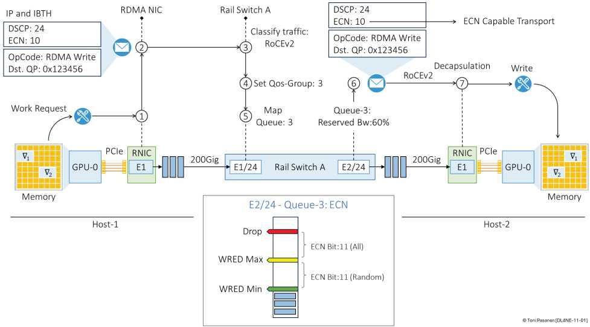
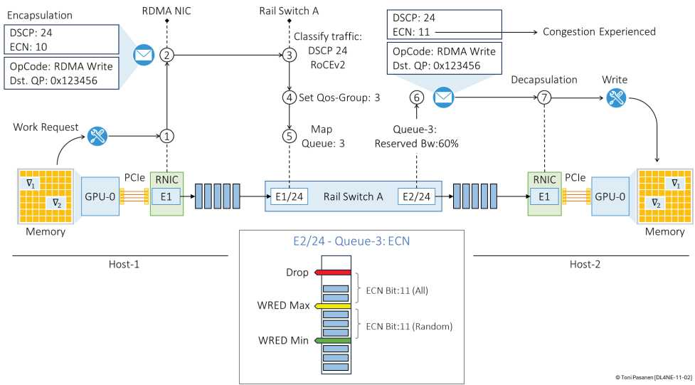

书 p237 GPU0→GPU3 无拥塞：报文 Rail A→Spine→Rail C 线速直达，时延最低、零抖动。这是优化目标：让所有同步都像独占链路。现实多流并发，队列一满就偏离基线。
队列超阈值，交换机置 IP 头 ECN=11（CE），接收端回 CNP 给发送端降速。优点端到端、粒度细；缺点反应慢一拍（需往返）。类比：先亮黄灯而非直接扣车。书 p240-244 报文位+阈值。
基于 802.1Qbb，按优先级（DSCP→QoS 组）发 PAUSE 帧，上游停指定队列、不停其他。需预留 Headroom 防飞行包溢出；配 DCBX（LLDP 扩展）全网协商 PFC/DSCP 一致。滥用会 PFC 风暴 + HOL + 死锁，Ch11 下半讲 DCQCN 如何驯服它。


一句话：ECN何时亮黄灯？PFC何时亮红灯？谁先谁后？